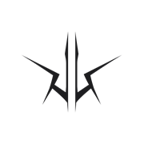

Good evening
Welcome back to Project Equavia
—
—
Hero image slot — placement/sizing pending (open decision #4, 00-OVERVIEW.md)
This week
Task completion trend
No tasks logged this week yet.
Recent activity
Nothing logged yet.
Open Equavia →